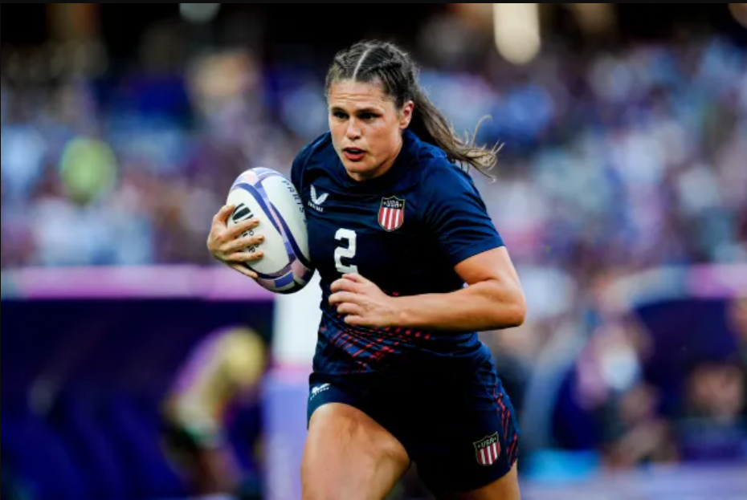
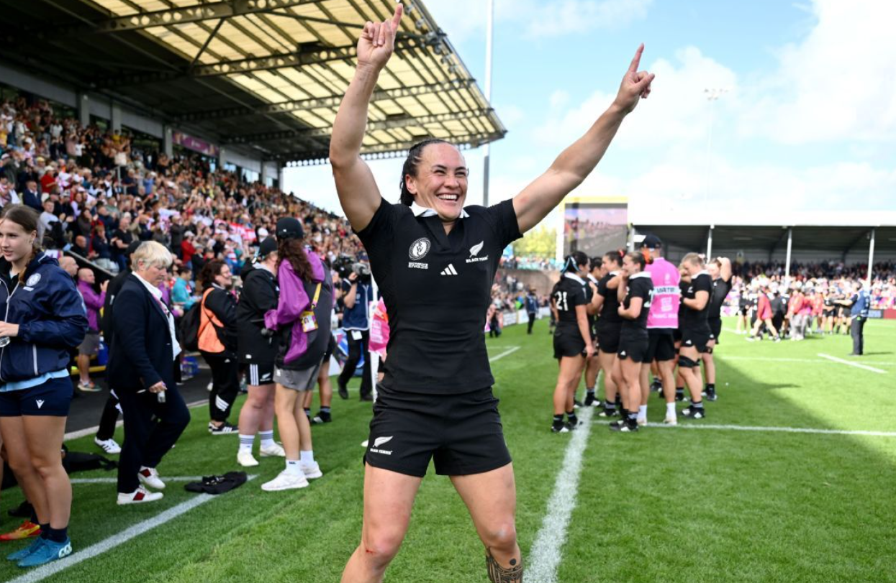
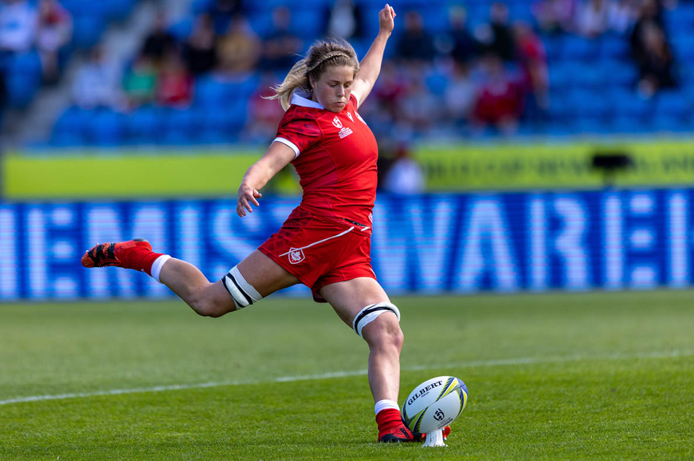
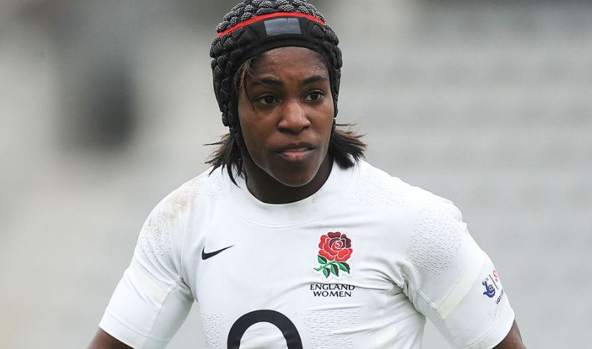

The legends who defined women's rugby on the world stage

Ilona led the USA Sevens team to a historic Olympic medal in 2024. Beyond her legendary stiff-arms, she has redefined the image of female athletes, using her massive platform to advocate for body positivity and "Beast Beauty" worldwide.

Often cited as the greatest finisher in the history of the sport, Woodman is a Rugby World Cup winner in both 15s and 7s. Her explosive speed and power made her the first woman to score 200 tries on the World Series circuit.

The 2019 World Rugby Women's Player of the Year, Scarratt is England’s all-time leading points scorer. Known for her incredible tactical kicking and composure under pressure. She was the first Englishwoman to compete in five World Cups.

A legendary flanker who transformed the image of the women's game. Maggie earned 74 caps for England, winning a World Cup in 2014 and seven consecutive Six Nations titles. She was the first woman to win the Pat Marshall Award, cementing her status as a global rugby icon
2023 All Rights Reserved. Design by Free html Templates